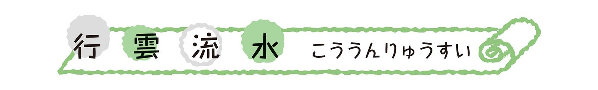
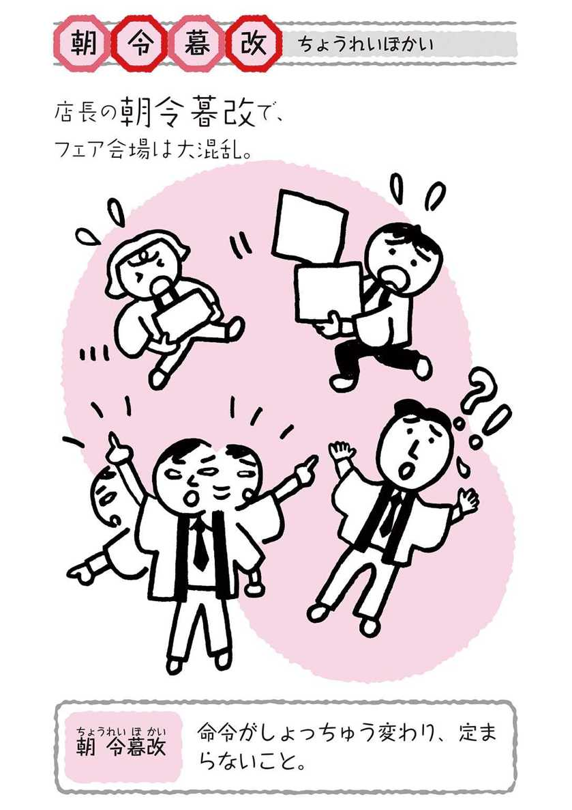
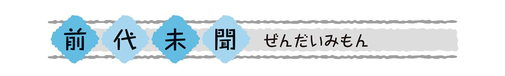
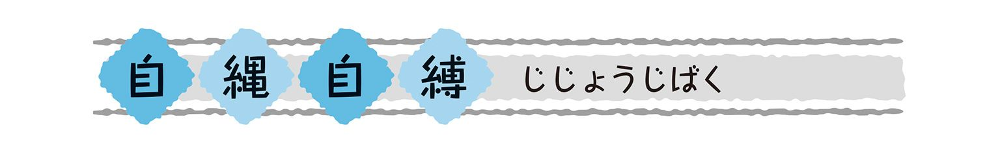
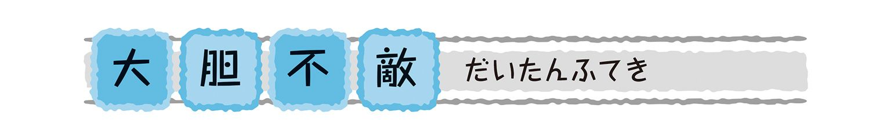
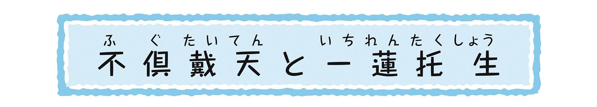
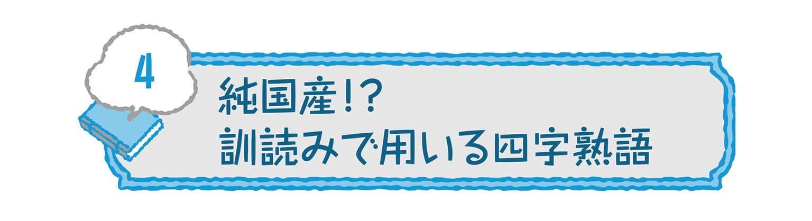

| おとなの楽習 (26) 四字熟語のおさらい | |
| 土井 里香 | |
| (2016) | |
「おとなの楽習」を実践なさっている方なら、新しい知識がいかに日常生活に刺激を与えてくれるか、その効果は体験済みですね。
新しい言葉を知ることは、表現と思考の材料が増えること。豊富な言葉は心の財産です。それらは相続や贈与によって引き継がれるものではなく、自分自身の経験からしか獲得できません。しかしながら、四字熟語集のようなものを四六時中携帯し、紐解きながら使うのは現実的ではありませんね。
子どもたちは、自分という人間を形成し、生きる力をつけるために日々学んでいます。おとなの私たちは、学ぶこと自体を楽しむとともに、やはり日常生活の中で自分自身の変化を感じたいもの。「見たことある気もするけど......」そんな四字熟語を、これからは自然に使えるようにしたいですね。
まあ、騙されたつもりで本書をひと通り読んでみてください。すると、身近に漂っている四字熟語に気づきやすくなり、「ちかごろ急に、世間が四字熟語を多用しだした」と錯覚するほどに。また、脳内がしばし四字熟語モードになり、「○○○○とはこのことだ」とばかりに、状況に見合った四字熟語が降臨するようになるでしょう。使えるようになるとは、そういうことなのです。
喜怒哀楽といえば、ケータイ端末には、おびただしい種類の絵文字・顔文字が登録されていますね。絵文字・顔文字の人相があなたの顔とそっくりではないように、四字熟語の多くは「ものの例え」であり、文字通りの状況が繰り広げられているわけではありません。けれどもパターン化された表現を道具として使うことで、気持ちや様子の輪郭がはっきりしてきます。
狂ったように踊り出すほど喜んでいる様子です。前から欲しがっていたものを手に入れた子どもや、全国大会で優勝したスポーツ選手は、実際に飛び跳ねたり走り回ったりしますね。でも、実際に狂ったわけではないから「狂気乱舞」ではありません。
競技場や合格発表の場でよく見られますが、悲しむ人たちや喜ぶ人たちが入り交じっているありさまです。「こもごも」には「かわるがわる」という意味があり、「交交（または交々）」と書くのですね。
こちらもかなり喜んでいるのですが、踊りは小躍り程度。欣喜は気持ちがうきうきする感じ。雀がちょこちょこと跳ねているように、その場で喜んでいます。
嬉しさや喜びの度合いを表す言葉に続き、次は怒りです。
髪の毛が逆立って天を衝くほどに怒っている様子です。『史記』の中に、同じ意味で「怒髪衝冠」と書かれている部分がありますが、これは、趙の惠文王が大国である秦に使者を出したとき、その使者が秦王の前で怒りをあらわにしたシーンです。このように髪の毛が冠を衝く程度なら、マンガなどでときどき見かけますね。
歯を食いしばり、腕をもう片方の腕で握りおさえて、怒りや悔しさをこらえる様子。怒髪衝天はそのままストレートに怒りの感情を出していますが、切歯扼腕は、抑えようとしても抑えきれない怒りです。
怒りというより、自分で自分が嫌になり、やけになっている様子ですね。これは『孟子』に出てくるのですが、「自暴」は儒教の礼儀をけなして自分を損なうこと。「自棄」は、思いやりや正しい行いを説く仁義の道を避け、自分を捨てること。このような人とは共に語りたくないし、行動を共にしたくもないと、孟子も言っています。
表情が豊かな人、特にいつも明るく笑顔を絶やさない人は人気者です。好かれる人を表す四字熟語は、ほめ言葉として使っても喜ばれますよ。

春爛漫というように、「爛漫」は花が咲き乱れている様子です。「天真爛漫」は無邪気でおおらかな人をさすほめ言葉ではありますが、無邪気さに呆れて「天然（ボケ）」のような意味になることもあるので、大人に対して使うときは注意が必要。
天真爛漫と同じような意味で、ありのままで純真な様子。どちらかといえば、詩歌などの評価に使います。技巧に走るのではなく、自然な感じでしかも完璧な作品のことです。
中国の短編集『霊怪録』に、天女が人間界に降りてくる話がありますが、その衣には縫い目がまったくないのです。針と糸で細工をしなくても身にまとえば素敵な衣装なんですね。
ところで、この天女は七夕で有名な織姫のことですが、彦星とは年に一度しか会えないものだから、天帝にお許しをいただいて人間界の男のところにやってくるのですよ。そもそも彦星と引き離されたのも、デートに明け暮れて機織りの仕事をさぼったからでしたね。まったく、どこが純真なんだか......。
絶世の美女、楊貴妃のことを、唐の詩人・杜甫がこのように絶賛しました。明るく澄みきった瞳ときれいに並んだ白い歯。ただし、男性には使いません。

イケメンの場合はこちらをどうぞ。眉は文字通りまゆのこと。やっぱり目ヂカラ!?
見た目だけでなく貫禄やたたずまいをほめるときは、次の語が有効です。
豪快でこせこせしていない人柄のこと。「磊」は石がごろごろと重なり合っている様子で、ちょっと無骨なイメージもありますが、「磊落」は心が広くおおらかなことを表します。少しのミスぐらい「ガッハッハッ」と笑って許してくれる、頼もしくも愉快な人。
「質」には、ありのまま、飾り気がないという意味があり、「剛健」は心身の強さを表します。正義のヒーローの多くが、まじめで強いこのタイプです。
人を批判する言葉はあまり使いたくないものですが、逆に、人からこう言われ、後ろ指をさされていないか自戒しつつ、確認していきましょう。
「夜郎」とは、中国西南部のとある少数民族の国の名。『史記』によると、大国である漢の使者がやって来たとき、上から目線で「漢とわが国とでは、どちらが強大か」なんて尋ねたのだそうです。まさに井の中の蛙。自分の小ささを知らないまま、偉そうに振る舞う、イタい態度のこと。ふてぶてしい印象から「野郎」としがちなので要注意。
何事にもいちいち口を挟む人。自分の意見を言うのはよいことですが、度が過ぎるのは考えもの。答えを求めるより議論そのものを楽しむ人たちもいます。そこでうまいことまとめてしまうと、かえって白けることも。
「居士」は、よく戒名の末尾に付いている称号ですが、「こじつける」の「こじ」と絡めているのです。
三寸とは約9cm。舌の先が9cmだと大変ですが、ここでは言葉が口元で停滞していると考えてください。口先だけ。言葉ばかりで心がこもっていない様子です。
三寸といえば「胸三寸におさめる」という言い方がありますが、こちらは考えや思いを心の中に秘めておくこと。混同して「胸先三寸」としてしまわないように。
お釈迦さまは生まれるや否や、はいはいもよちよち歩きもすっ飛ばして、七歩歩かれたそうです。片手で天を指し、もう一方の手は地面を指し、「天上天下唯我独尊」と唱えながら歩いたと、『長阿含教』に書かれています。
お釈迦様だったらいいんですよ。でも、人間界でこのようなことをしていると怪しまれます。自分だけが一番偉いとうぬぼれている、「オレさま」な人のことです。

自分の田んぼに水を引き入れる、つまり、自分にとって都合のよい行動をとることです。自分の都合を優先させるのは悪いことではありませんが、そのために他人に不快な思いをさせたり迷惑をかけている場合は、「そのやり方は我田引水だ」と言われてしまいます。
言葉巧みに、顔の表情もやわらげて人に媚びること。「令色」は、人の機嫌をとるために顔色をよくすること。穏やかな表情でよい言葉をかけられると、それが真心からのものなら嬉しいのですが、下心が感じられる場合は警戒されますね。
『論語』によると、孔子も「巧言令色は、思いやりでも何でもない（巧言令色、鮮なし仁。）」と述べています。
文字通り、厚かましい顔つきで恥知らずなことですね。「無恥」を「無知」としてしまわないように。
COLUMN
●四字熟語の定義●
「漢字四文字の熟語を10個、集めなさい。」
小学校の教室でこう言うと、子どもたちは、まず「一石二鳥」「暴飲暴食」などを出しはじめます。そのうちに「弱肉強食」とくれば、誰かが「焼肉定食」と言いだし、さらには「和歌山県」「夜露死(よろし)苦(く)」「三年一組」なども。一人が「山田太郎」と言えば、あっちで「山田花子」、こっちで「山田二郎」......と、どんどん盛り上がります。
四字熟語の定義については、「中国の故事をもつ由緒正しいものこそ四字熟語なのだ」という人から、「漢字が四つ続いていればいいだろう」という人まで、その考え方はさまざまです。
「焼肉定食」は形の上では四字の熟語ですが、実際は二字の熟語を組み合わせただけで、「唐揚げ定食」、「焼肉弁当」など、他の語と組み替えることが容易です。
いっぽう、「弱肉強食」は一見「弱肉」＋「強食」のように思えますが、「弱肉」や「強食」が単体で使われることはまずありません。組み合わせて四文字にしてこそ、一定の意味を持つのです。
似た意味の二文字熟語を重ねて強調する例もありますが、基本的には四文字が密接に結びついているかどうかが、四字熟語として認定できる一般的な基準のようです。
いきなりですが、これは男女の縁を取りもつ人のこと、つまり仲人さん。知らなければ、いったい何の話なのかと思いますね。それに意味だけ知っていたとしても、なぜこれが仲人なのか。月の下はともかく、氷人って......。シュールです。例によって中国の昔話から来ている言葉ではありますが、「月下」と「氷人」はそれぞれべつの話からきているうえ、役割もまったく違っているのです。
「月下」は、唐の時代の奇談集『太平広記』から。月の光の下、老人が袋に寄りかかって本を読んでいます。そこに旅人が通りがかり、袋の中身を尋ねると、老人は「赤い縄じゃよ。これで男女二人の足をつなげば、必ず夫婦になる」と答えました。赤い糸ではなく赤い縄、糸より強力です。旅人は、ちょうど婚活がなかなかうまくいかなくて旅をしていたところでしたので、自分の相手は誰なのかと問いました。それは、なんと三歳の小汚い女の子。旅人は殺意さえ覚えるほどでしたが、14年後には見違えるほど美しくなったその子と再会し、めでたく結ばれるというか、もともと結ばれていたのだ、というお話しです。
「氷人」は、『晋書』にある話からです。氷の上に立ち、氷の下にいる人と話すという、奇怪な夢を見た人が、夢占いのところへ行きます。夢占い師は、「氷の上下は陰と陽。その夢は、汝が結婚の仲人になるという前ぶれじゃ」と答えました。夢で予言してもらうほどのことではなかったかもしれませんが、こんなことから「月下氷人」という言葉が使われているのです。
夫婦仲がよいことですが、どんなおしどり夫婦にでもあてはまるとは限りません。文字を見てみれば、夫が言ったことに妻が従うこと。確かに、こういう関係だとあからさまなけんかにはならないでしょう。よそのご夫婦について用いるよりも、自分たちの夫婦仲を謙遜する場合や、妻を立てる意味で使うとよいでしょう。
男女の仲がむつまじいこと。「比翼の鳥」と「連理の枝」を合わせた語。
「比翼の鳥」は、雌と雄、それぞれ目と翼が一つずつで、常に並んで飛ぶという架空の鳥です。「連理の枝」は、はじめは隣り合った別々の木であったものが、そのうちに枝が絡み合い、木目が一つになった枝のこと。「連理の樹」ともいい、神社の境内や公園で見かけることも。
白居易（白楽天）の詩「長恨歌」に、「天にあっては願わくは比翼の鳥となり、地にあっては願わくは連理の枝となりましょう」というくだりがあります。唐の玄宗皇帝が楊貴妃の魂を呼び出してもらったときのセリフです。いわば悲恋物語ですが、来世までも永遠にむつまじくありたいという思いの尊さにより、結婚式のスピーチなどでよく取り上げられます。
偕老同穴の契り。これも、夫婦が永遠に仲よく暮らしていくことです。
「偕」は「ともに」の意味。ともに老いて、墓穴までご一緒しましょうというわけです。中国最古の詩集『詩経』の、次のくだりに見られます。
子の手を執りて子と偕に老いん
穀きては則ち室を異にするも
死しては則ち穴を同じくせん
烏の集まりのように、特に規律も何もなく、てんでばらばらにただ集まっている人たちのことを烏合の衆といいます。「烏合之衆」にすれば四字熟語といえなくもないのですが、そうすると四字熟語に昇格してしまう語がありすぎるので、さりげなくこんなところで取り上げました。
ちなみに、烏は真っ黒で目玉がどこにあるか分かりにくい鳥だから、「鳥」の目の部分を一本なくして「烏」という文字になったのだとか。
さて、ここでは世の中を見渡して「なんだかなぁ」と思ったときに使うような語を集めてみました。
学問の真理を後回しにして、権力や社会の風潮に合わせた説を唱えること。「阿」は、媚びへつらう、迎合するという意味です。たとえば、ニセ科学といわれる、確たるデータもないのに憶測ででっち上げられるようなネタ。いろいろな健康法、ダイエット法でも、ときどきそういうものがありますね。
流言はデマのこと。「蜚」はゴキブリを意味する文字だとか。「蜚語」で、根も葉もないうわさのことです。つまり、デマやうわさ。「流言飛語」と書くこともあります。曲学阿世よりも確信犯的ですね。
「附和雷同」とも書きます。雷のとどろきが順に伝わっていくように、無条件に言葉や行動を他人の意見に合わせること。仲良くしていても自分の道理は通す「和して同ぜず」に対し、こちらは自分の考えがありません。むやみやたらと人に合わせる「付和」ですから、「不和」と間違えないように。
同じ漢字が続くので、たいていは「々」を用いて「唯々諾々」と書きます。「諾」は承諾の諾ですね。「唯」は中国では「ウェイ」と発音しますが、擬声語で日本語の「はい」にあたります。そして「唯々」は、はいはいと人の言いなりになること。付和雷同がみんなに合わせるのに対して、唯々諾々は、特定のだれか決まった人、特に上司や目上の人に合わせることです。
中国戦国時代の『韓非子』によると、下心のある臣下を見分ける方法が八つあり、そのうちの一つが唯々諾々。つまり、君主のご機嫌をとって判断力を鈍らせるため、何でもはいはいと言うことを聞いておく態度のことです。
表面では従うふりをしていても、心の中では背いていること。唯々諾々よりも悪質です。ネットに見られる匿名の誹謗中傷などは、このような人の仕業かも。
「美辞」も「麗句」も、美しく立派な言葉のこと。同じ意味の言葉を重ねて強調しています。たいていは、むやみに言葉を飾り立てているというマイナスイメージで使われます。
美辞麗句を並べ立て、唯々諾々と従っておけば、お偉いさんのご機嫌とりもバッチリです。
媚びへつらう態度を表す語が続きましたが、最後は公平中立を示す語で締めておきましょう。
考えが偏らず、徒党も組まず。どちらにもつかない公平な態度のことで、「不偏不党の精神」のように使われます。それなりに自分の考えやポリシーがあっての中立で、どっちつかずというような否定的な意味はありません。「不変不党」としやすいのでご注意を。
現代社会のほろ苦い言葉が続きましたから、ここらで命の洗濯でも。
花と鳥と風と月と。いずれも詩歌や芸術の題材としてピッタリ。自然の美です。ときどきは山奥のお寺にでも出かけ、花鳥風月を実感したいものですね。
一方、唐の詩人・白居易（白楽天）は、四季の代表的な自然美として「雪月花」を挙げています。
陽の光に映えて紫色に霞む山々。そして澄みきった川の流れ。景色の美しい場所、地域をいいます。江戸時代、儒学者の頼山陽が京都に住んでいたとき、美しい山と川が一望できる書斎を山紫水明処と名づけたのです。
きれいな鏡面と揺らぎのない水面のように、心が澄み切って静かな様子です。
鏡がまだ貴重だった大昔は、水面に自分の姿を映していました。当然、流れる水には姿はうまく映りません。『荘子』に、次のようなことが書かれています。
「人が静かな水面に姿を映すように、静かな人のそばでこそ自分の心も落ち着くものだ。」
山紫水明の地のように、景色が美しいことを風光明媚ともいいます。
「媚」は「こびる」の意味で、媚薬に使われるほどですが、実は「こまやかな美しさ」という意味もあるのです。また、「眉目秀麗」の「眉」はまゆですから、「風光明美」や「風光明眉」は間違いです。

宋の文豪・蘇東坡が、文章作成の極意を次のように述べています。
「文作りは、行く雲、流れる水のように自然まかせ。初めから決まった形などないのだ。」
とはいえ、基礎的な文章力を備えている人が目指す、ワンランク上の目標だと思いますが。それはさておき、いまでは文章に限らず自然の流れに任せて行動するという意味で、この語が使われます。
散る花と流れる水は、去りゆく春の景色。時が過ぎ去る寂しさ、むなしさを例えています。「落花」を流れに身を任せたい男性、「流水」は落花を受けとめたい女性に見たて、相思相愛を意味することもあります。

仏教経由で一般的になった語が、四字熟語にはたくさんあります。お経を知らなくても、こうした言葉を通して、私たちはいつの間にか仏様の教えに触れているのですね。
これは、四字熟語であることを忘れるくらいに日常生活の中でたびたび使われ、よく知られていますね。そこで、その意味をちょっと分析してみましょう。
簡単に言えばひどい苦しみのことですが、単に苦しさ四倍、八倍という意味ではありません。仏教でいう、四種の苦しみと八種の苦しみを合わせた、いわば苦しさのコースメニューみたいなものです。
四苦は、生老病死の四苦。八苦は、この四苦に次の四つの苦しみを加えたもの。
①愛別離苦......愛する肉親と別れる苦しみ
②怨憎会苦......怨み、憎んでいる人に会う苦しみ
③求不得苦......求めるものが得られない苦しみ
④五蘊（陰）盛苦......心身を構成する五要素から生じる苦しみ
なかでも「愛別離苦」は、四字熟語としてしばしば使われています。
また、「五蘊」とは、色（身体）・受（感受）・想（知覚）・行（意志）・識（識別）の五つです。
この世のすべての存在や現象は、常に変化し定まることがない。いろは歌の「うゐのおくやま」も、漢字で書くと「有為の奥山」です。「有為」とは、生まれ、変化し、やがて消えてゆくあらゆる存在のことなのです。同じ意味で、「万物流転（ばんぶつるてん）」という語もあります。
「万物流転」はすべてが変化していくことですが、その、すべてのものの一つ一つもまた、永遠に何度も生まれ変わってゆく、それが「生生流転」です。
この世のすべての生きとし生けるもの。「衆生」は仏の救済の対象として、特に人間をさします。仏様でもない私たちが他人のことを「衆生」と言ってしまうと、上から目線ですね。
生き物だけでなく、この世に存在するすべてのものや現象。元祖仏教ともいえる原始経典『法句教』にある言葉です。
「高層ビルが林立している」というように、「林」は木以外の物でも連なっている様子を表すことがありますが、「森」も同様。「羅」は羅列、網羅などで使いますね。「森羅」は、天地の間で物が限りなく並んでいる状態です。
これもまた、この世にあるすべてのもの。ものはものでもくだらないものという意味で、「反対グループは、どうせ有象無象の集まりだ」のように使われます。形や様子をさす「象」は「相」に通じ、「有相無相」と書くことも。
「鍋料理のいろは」のように、「～の初歩」といった意味で「いろは」はいまでもよく使われます。これは、「フラダンスのＡＢＣ」などと同じですね。ただし、いまのひらがな表は「あいうえお」から始まっていますが、なぜか「鍋料理のあいう」とは言いません。
「いろは」ではじまるいろは歌は、手習いのお手本として作られたもので、47字のひらがなが一つずつ読み込まれています。それだけでなく、涅槃教の「諸行無常 是生滅法 消滅滅已 寂滅為楽」を和訳した奥の深い歌なのです。
この涅槃教の句のうち、「諸行無常」はたいへん有名ですね。また、「寂滅為楽」は、「死んで煩悩から解き放たれたら楽になる」というような意味で、近松門左衛門の人形浄瑠璃『曽根崎心中』に出てきます。
あれ数ふれば暁の、
七つの時が六つ鳴りて、
残る一つが今生の、
鐘の響の聞き納め、
寂滅為楽と響くなり。
いまから心中するところの男女のセリフですが、鐘の音が「寂滅為楽」と聞こえてくるというのですね。悲しく辛い場面ですが、これも声に出して読みたい名文です。
「寂滅為楽」よりも出番の多いのが、「諸行無常」でしょう。また、同類の語もたくさんあります。
祇園精舎の鐘の声、諸行無常の響きあり。
ご存じ、『平家物語』の冒頭です。有為転変や万物流転と同じく、世の中のすべての物事で、変わらないものは一つもないという教え。鐘の響きに仏教の四字熟語を聞くところは、『曽根崎心中』と通ずるものがありますね。『平家物語』は、さらに続きます。
沙羅双樹の花の色、盛者必衰の理を表す。
沙羅双樹は、お釈迦様が入滅されたときに四方に二本ずつ生えていたという沙羅の木です。花の色といっても花が咲くことは珍しいそうで、しかも白っぽい色ですが。とにかくどんなに華々しく活躍し、盛んな時期があった人でも、いずれは必ず衰退していく道理です。
『平家物語』は、琵琶法師によって語り伝えられてきたものですが、法師という名の通り、もともと琵琶法師は僧侶であり、仏教の教えを広めるために各地で弾き語りをしてまわったのです。時代が進むにつれて娯楽色が強くなり、ストーリーやパフォーマンスを楽しむようになってきたわけですが、『平家物語』に仏教の言葉が多用されているのもうなずけます。
さて、仏教とはもう少し違った側面から無常観を表現している語に、「飛花落葉」があります。風に吹かれて飛ぶ花びらと、やがて散り落ちる青葉ということで、世のはかなさや無常を感じさせられますね。
このような風流系で言えば、唐の詩人・杜甫の「春望」も有名です。
國破山河在 国破れて山河在り、
城春草木深 城春にして草木深し
また、松尾芭蕉が藤原三代の栄華を詠んだ「青草や 強者どもが 夢の跡」は、杜甫へのオマージュといえます。杜甫や芭蕉の詠嘆ぶりを見ていると、仏教はむしろ、理系的発想が満載なのではないかと思えてきます。
盛者必衰と似た意味ですが、こちらは一代限り。生きている者は必ず死ぬということなので、「勝者必衰」としてしまわないように。
栄えたり衰えたり。盛者必衰とは似ているけれど違います。次の例文で比べてみましょう。
城跡に立ち当時の栄枯盛衰を思うと、あらためて盛者必衰を実感する。
また、同じ「盛」でも読み方が違いますね。遣唐使によって伝わってきた読み方を「漢音」というのに対し、それ以前のものの多くは「呉音」といわれます。仏教語の多くは呉音で、「盛」を「じょう」と読むのも呉音の発音です。
どちらかといえば悲観的、諦観的な無常の思想ですが、時の流れとともに変わることは、何も衰退や退化だけではありません。
絶え間なく急速に進歩する様子。日本の科学技術はいまでも日進月歩で発展し続けていますね。一日一日の努力の積み重ねが、月々の進歩につながります。
《ことばのルーツ》
紀元前500年頃の中国は春秋時代。呉王の闔閭は、勾践が君臨する越を攻めたものの、その際の傷がもとで死んでしまう。闔閭の子である夫差が即位して呉王となり、闔閭の側近であった子胥は引き続き夫差に仕えた。
夫差は父の仇討ちを強く心に誓い、朝夕薪の上で寝起きすることにした（臥薪）。こうして、痛みを感じるたびに復讐心を募らせたのだ。また、部屋に出入りする使用人には「夫差、おまえは越人が父を殺したことを忘れたか」と言わせた。
そして時機到来、夫差は越を破る。越王の勾践は生き残った兵を引き連れて会稽山に逃げ込み、「私は家来となり妻を妾として差し出します」と命乞いをした。夫差の忠実な側近の子胥が「聞いてはなりませんぞ」と進言したが、越から賄賂をもらっていた重臣の伯嚭が夫差を説き伏せ、勾践を許してしまう。
国に帰った勾践は、寝所に肝を吊しておき、寝起きするたびにこれを仰いで嘗めながら（嘗胆）、「おまえは会稽の恥を忘れたか」と自分に言い聞かせた。そして、兵を訓練し、呉を討つ準備に専念した。
一方、呉では、夫差の側近の子胥が狡猾な伯嚭に陥れられて自害した。その後、越に攻められ破れた夫差は、無実の罪で子胥を処罰したことを悔いながら、自ら命を絶つのであった。
『十八史略』より
「臥薪嘗胆」と一気に言ってしまうと、薪の上で寝るのも肝を嘗めるのも同一人物がしたことのように思えますが、臥薪は夫差が、嘗胆は勾践が実践し、テンションを保っていたわけです。二人はライバル同士でしたが、行動パターンはけっこう似ていますね。
呉と越の戦いにはほかにもさまざまなエピソードがあり、それぞれよく知られ、人気があってドラマやゲームの格好の素材となっています。
《ことばのルーツ》
常山に率然という蛇がいる。その首を撃てば尾が反撃すべく襲ってくる。尾を撃てば首が向かってくる。中程をねらえば首と尾がともに迫る。兵隊をこの一匹の蛇のように一体化させて率いることは、不可能ではない。
呉人と越人は互いに憎しみ合っているが（呉越）、同じ舟に乗って川を渡り嵐に遭ったなら（同舟）、まるで左手と右手のように息を合わせ、互いに助け合うことだろう。
馬車（戦車）を並べるだけでは不十分だ。兵たちが手を携え、まるで同一人物であるかのように志を一つにするためには、そうならざるを得ない状況に追い込むことが必要だ。
『孫子』より
これも呉と越のお話。出典の『孫子』は、春秋時代の兵法書です。
実際に呉人と越人が同じ舟に乗り合わせるようなことがあったかどうかはわかりませんが、孫子は、敵国同士だった呉と越を引き合いに出し、もしもこういう状況になったらと仮定して、兵法を説いたのです。
《ことばのルーツ》
中国の戦国時代、秦、燕、趙、魏、韓、楚、斉の七つの大国があり、なかでも一番強大な西方の秦は、その武力で諸侯を脅して領土をせしめていた。
あるとき、洛陽の蘇秦という遊説家が、秦の恵王に他の六国と同盟を結ぶよう説いたが採用されない。そこで、燕の文侯のところへ行き、趙との和親を説いたところ、文侯は蘇秦に資金を与え趙へ行かせた。
蘇秦は趙の粛侯に次のように説いた。「周辺諸侯のみなさんが兵力を合わせれば、秦の10倍にもなりましょう。協力して西方を攻めたなら、必ずや秦を破ることができますよ。六国が互いに同盟を結び、秦を退ける以外に方法はありません。」
粛侯は蘇秦に資金を与え、諸侯と同盟を結ぶことにした。蘇秦は「鶏口となるも牛後となるなかれ（鶏のくちばしにはなっても牛の尻にはなるな＝大国の下に付き従うよりも、小さくとも一国一城の主たれ）」という古くからのことわざを引用して諸侯たちを説き伏せ、とうとう同盟六国の宰相にのし上がったのだった。
『戦国策』より
このエピソードには、実はほかにも四字熟語が隠れています。原文では、西の秦と東の国々が手を結ぶことを連衡、南北に並んだ国々が結ぶのは合従（従は縦のこと）と書かれているので、「合従連衡」の四字熟語として、政治・国際情勢などに関する記事で見かけることがあります。
小さな国が南北で（合従策）あるいは東西で（連衡策）手を結び、大きな国に対抗すること。巧みな外交政策。
さて、四字熟語には動物の名前が含まれているものも多いのですが、鶏と牛が登場したところで、鶏と犬（狗）が含まれた故事成語もご紹介しておきましょう。
取るに足らない智恵、物まねやこそ泥のようなくだらない技能の持ち主。
《ことばのルーツ》
中国の戦国時代、斉の宣王の孫である孟嘗君は、賢者として諸侯にも名を知られていた。一芸に秀でていれば誰でも食客（居候）として迎え入れたので、その数は数千人にものぼる。孟嘗君の名声を聞きつけた秦の昭王は、孟嘗君を宰相として迎えるべく呼び寄せた。しかし、しょせんは他国の王の身内である。昭王は気が変わり、孟嘗君を捕らえてしまった。
孟嘗君は昭王の幸姫に取り次いでもらい、解放するようとりなしてもらえないかと頼んだところ、幸姫は「見返りに、あなたが持っていた狐の白皮衣をくださいな」と言う。狐の白皮衣はたいへん希少なものであるが、すでに昭王に献上したばかりだった。
ところで、孟嘗君の食客で盗みの得意な者がいた（狗盗）。孟嘗君はこの者に手助けさせて白皮衣を取り返し、幸姫に献上した。
こうして解放されると、城を去り、名前を変え、夜中に函谷関という関所までたどり着いた。ここでは、朝一番の鶏が鳴いたら通行人を通すことになっている。しかし、ここでもたもたしていたら昭王の追っ手が来るかもしれない。
孟嘗君の食客には、鶏の鳴きまねが得意な者もいた（鶏鳴）。彼が鶏の声を出すと、他の鶏もみな鳴き始め、関所を通り抜けることができた。
『史記』より
もともとは「くだらない技能でも役に立つことがある」という解釈だったようですが、いまでは否定的な意味で使われています。
《ことばのルーツ》
劉邦の漢軍に追われ、項羽の楚軍は垓下というところに立てこもった。兵士の数は少なく、食糧も尽きてくる。漢軍とそれに味方する諸侯の兵は、立てこもった楚軍を幾重にも取り囲んでいることだろう。
夜になると、四方から楚の歌が聞こえてきた。「楚はすでに漢のものになってしまったのか。」項羽は驚いた。「これほど多数の歌声が聞こえるとは、さぞかし大勢の楚人が漢に寝返ったのであろう。もはや武運は尽きた。」
気力を失った項羽は、とばりの内で酒を飲み、漢詩を詠んだ。頬には幾筋かの涙が伝う。
傍らには妻の虞美人が寄り添い、ともに涙を流した。
『史記』より
七つの大国が覇権争いをしていた中国も、紀元前221年に秦の始皇帝が天下を統一すると、一応落ち着いたことになり、戦国時代は幕を下ろします。しかし、万民が不満を持たない治世など、なかなかできることではありません。そのうちに秦を倒そうとする勢力が湧き起こります。項羽と劉邦もそうした共通の目的で義兄弟の杯を交わした仲でした。
たった十数年で秦が滅亡した後は、昨日の味方が今日の敵。講和の会合を終えて東方へ帰って行く項羽の軍を、劉邦の軍が追います。劉邦が信頼している軍師・張良のアドバイスに従ったのです。
この四面楚歌のエピソードでは、囲まれている項羽は楚の国王。ですから、楚歌は敵の歌ではなく自分の国の歌ですね。敵に囲まれた状態を「四面楚歌」というのですが、敵の歌に囲まれているわけではないのです。普通、アウェイといえばライバル国の国歌に囲まれるので、勘違いしやすい部分です。
楚の歌を聞かせたのは、望郷の念から戦意を失わせるための劉邦の戦略だったようです。漢に投降した楚人に歌わせたのみならず、おそらくは漢軍にも声を合わせて歌わせ、歌声を増幅させたのかもしれません。さすがの猛将項羽も窮地に追い込まれた状況下では、ますます的確な判断が難しかったでしょう。実際、楚軍が漢軍に逆転したわけでもなく、歌わされて歌っていたのですから。
歴史小説『項羽と劉邦』は司馬遼太郎による名作ですが、この司馬遼太郎というペンネームも、『史記』の作者・司馬遷にあやかってつけられたとか。
四面楚歌の類語として、「孤立無援」もよく使われますね。文字通り、誰からも見放されて何の助けもない一人ぼっちの寂しい様子です。また、「孤軍奮闘」という言葉もありますが、こちらは一人になっても最後まで戦い抜くという根性のある語です。
《ことばのルーツ》
宋の国に、猿をたくさん飼っている者がいた。とにかく猿が好きで猿の心もよくわかるほど。猿の方も猿飼いによくなついていた。
猿飼いは、自分の食べる分を減らしてでも猿にはたらふく食べさせるようにしていたが、にわかに貧しくなり、餌も節約せざるを得なくなってきた。しかし、餌を減らすことで猿がなつかなくなっては悲しい。とりあえず「君たちにあげているトチの実だが、これからは朝に三個ずつ、暮れに四個ずつで我慢してほしいのだ。これでは足りないだろうか？」と相談してみたところ、猿は案の定、キーキーと怒り始めた。そこで、「それでは、朝に四個、暮れに三個ずつではどうだろう。これなら足りるかな？」と問いかけてみると、猿はみな、ひれ伏して喜んだ。
『列子』『荘子』より
春秋戦国時代には大勢の思想家が活躍し、多くの学派も生まれました。これらをまとめて「諸子百家」といいます。たとえば『論語』で有名な孔子もそのうちの一人です。孔子の学派は儒家ですが、朝三暮四の逸話が出てくる『列子』や『荘子』は、道家の思想を説いた書物なのです。
もともとは、知恵者は物事をよく考えて手段を講じることができるが、愚かな者は正しく判断することができない、という例えでしたが、いまは人を愚弄する例えとして解釈されています。中国では、考えがころころと変わってあてにならないときにも使われるようです。
一般には、考えがころころと変わるという意味では、次の「朝令暮改」の方がメジャーでしょう。

《ことばのルーツ》
劉邦が漢を建国して20年あまり経った頃、劉邦の子が即位して文帝となった。政治家の晁錯は文帝の信望厚く、農業重視のさまざまな政策を上奏していた。
「農民たちは休みなく働きつつも、やれ葬式だ、やれ病気見舞いだと、とにかく日々てんてこ舞いです。水害や日照りに翻弄されるうえに、急にむちゃな税を取られ、朝に出された法令が暮れには改められる（朝令暮改）といった、あてにならない暮らしをしています。このままでは農民はどんどん逃亡し、国も貧しくなってしまうでしょう。」
文帝の子、景帝の時代には、諸侯の力が大きくなりすぎないよう、晁錯は諸侯の領土や権限を削減する政策を打ち出した。当然、諸侯たちの反発を招くこととなり、呉、楚などの七国は反乱を起こす。
こうして晁錯は、かねてから晁錯を疎ましく思っていた袁の計略にかかり、反乱軍を黙らせるという名目で処刑されたのであった。
『漢書』より
四字熟語は二文字ずつに区切って捉えることが多いと思いますが、書き取るときになんとなく二文字の熟語を組み合わせるだけでは、書き間違いが生じやすくなります。この「朝令暮改」も、「ちょうれい／ぼかい」ということで「朝礼暮改」としてしまわないよう、注意しましょう。
《ことばのルーツ》
孟子は幼い頃に父親を亡くし、母親（孟母）が女手一つで孟子を育てていた。家はお墓の近くにあり、孟子はよく葬式ごっこをして遊んだ。葬儀の踊りをまねたり、土を掘ってはまた埋めたりする孟子の様子を見て、孟母は「ここは子どもを育てるのにふさわしくない場所だ」と考え、市場の近くへ引っ越すことにした。
すると、孟子は、家畜を殺しては肉を切って売る肉屋の様子を見て、それをまねて遊ぶようになった。孟母はまた、「ここも子どもを育てるのにふさわしくない場所だ」と考え、今度は学校の近くに引っ越した。
そこでは、孟子は学校で行われている儀式を見て、祭礼の道具を供えるまねをしたり、出入りの際に敬礼をするようになった。家屋は粗末なものではあったが、孟母は「ここなら子どもを育てるのにたいへんふさわしい場所だ」と納得し、ようやくその場所に落ち着いた。
こうして、孟子は成長してから立派な儒学者になったのである。
『列女伝』より
孟子は、戦国時代に孔子の儒教を独自展開した偉人ですね。
「遷」は他の地に移ること。「墓地の近く→市場の近く→学校の近く」なら、引っ越しは二回だけじゃないかということになりますが、「三」は回数の多いことを表す「三」で、何度も引っ越したという意味かもしれません。あるいは墓地の近くに住んでいたのを、すでに一度目として数えたのでしょう。
わが子をスーパースターに育て上げた孟母の逸話は、これだけではありません。
孔子と並び称せられる孟子も、幼少のみぎりはごく普通の子どもだったようで、ある日、遊びほうけて家に帰るのがずいぶん遅くなってしまいました。孟母は、機織りの手を休めることなく孟子に尋ねます。
「勉強は進みましたか」
「特に変わりはありません」
その直後、孟母は孟子の目の前で、織っていた織布を途中で断ち切ってしまいました。学問は、倦まずたゆまず継続することが肝心。それを中断することの意味を孟子は思い知り、日々勉学に勤しむようになったという、「孟母断機」のエピソードです。
「孟母三遷」に「孟母断機」ときたら、強烈な教育ママみたいなイメージが湧いてくるかもしれませんが、実際の孟母はたいへん奥ゆかしい女性だったようです。そもそも、お話の中に名前さえ出てきません（孟母というのは見ての通り孟子の母という意味）。けれども、孟子がお腹にいるときから胎教を考え、きちんとした生活を心がけました。「孟母三遷」では、孟子の遊びを禁じるのではなく、環境を変えることを考えます。「孟母断機」では、孟子に自ら気づかせました。
というわけで、先回り口出し手出しの「猛母参戦」にならぬよう！
《ことばのルーツ》
漢の武帝の時代に、翟公という役人がいた。翟公が中央政府の大臣になると、訪問客たちが家の前にあふれた。しかし、免職されると、門の外に雀捕りの網をはりめぐらせられるほどにさびれてしまった（門前雀羅）。
その後、翟公は再び大臣のポストに返り咲いたが、大きな字で次のように書いて、門の上に貼り出した。
「一死一生、乃知交情、
一貧一富、乃知交態、
一貴一賤、交情乃真。
（生死が分かれたときにこそ、友情がどんなものであったかがわかる。貧富が分かれたときにこそ、交わりの態度がどうであるかわかる。貴賤が分かれたときにこそ、真の友情であるかどうかがわかる。）」
『史記』より
武帝は、「朝令暮改」で登場した景帝の子です。『史記』では「門外可設雀羅（門の外には雀捕りの網を仕掛けられるほどだった）」と書かれているのですが、唐の時代の詩人・白居易が詩の中で「賓客亦已散 門前雀羅張」と表現し、門前雀羅の四字熟語として広まりました。
門前に雀と聞くとなんだかにぎやかそうですが、まったく逆の趣ですね。門前がにぎやかな場合は、四字熟語ではありませんが、「門前市を成す」あるいは「門前市の如し」といいます。その家を多くの人が訪れてにぎわっている様子です。
『戦国策』と『漢書』には、「門庭若市（門庭市のごとし）」という記述が見られます。両方のエピソードを簡単に紹介しておきましょう。
《ことばのルーツ》
斉の国の威王は、宰相の鄒忌の進言を受けて次のようなおふれを出した。
「大臣・官吏はもちろんのこと平民・百姓に至るまで、王の過ちを面前で直接指摘する者には上等賞を与える。書面で提出した者には中等賞を与える。公の場で王の過ちについて議論し、それが王の耳に届いたなら、下等賞を与える。」
このおふれを出すや否や、大臣や官吏が競うように王宮におしかけ、宮廷の門前はまるで市のように（門庭若市）大賑わいとなった。一年後には、何も指摘することがなくなり、斉は素晴らしい国になった。
『戦国策』より
《ことばのルーツ》
前漢の哀帝は、19歳という若さで即位したため、政治はその外戚たちが好きなようにしていた。また、美男の董賢を寵愛しすぎるので、重臣の鄭崇が哀帝を諫めた。そこへきて、かねがね鄭崇を疎ましく思っていた長官の中傷により、鄭崇は哀帝に呼び出された。
「君の門庭にはいつも大勢の人が集まって、まるで市のようだ（門庭若市）。そんなに人を集めて何を企んでいるのか。」
哀帝が責め立てると、鄭崇は答えた。
「私の門庭は市のようですが、心は水のように静かです。どうぞ、気がすむまで調べてください。」
これを聞いた哀帝は怒り出し、鄭崇を投獄したのであった。
『漢書』より
『漢書』の方は皮肉まじりの意味で使われているので、門前市の熟語はあまり安易に使わない方がよさそうです。
《ことばのルーツ》
後漢に張楷という者がいた。古典書籍にたいへん詳しく、その弟子は常に100人以上。年老いた学者から君主・諸侯の親戚までが会いに来るほどで、町中が人と車で混雑していた。
あるとき、役人から知事に推薦されたが、張楷はこれを断って山にこもってしまう。それでも学者たちは張楷を追って集まり、市ができるほどであった。順帝が詔を発してまで任官を促したが、張楷は病気だからと言って応じない。
張楷は道術にも長けており、五里にわたる霧（五里霧）を作り出すことができた。この中に入れば、方角はさっぱりわからなくなるのだ。一方、函谷関の西には三里の霧を作る裴優という者がいた。裴優は張楷に弟子入りを請うたが、張楷は会おうともしない。
裴優は三里霧を作って盗みをはたらき、捕らえられた。その際に「この術は張楷から教わった」と言う。張楷は無実の罪で投獄されたが、うろたえることもなく、牢獄の中で経典を暗唱し、古典書籍の注釈を執筆した。有罪の証拠もなく二年後には家に帰され、再び帝の詔により礼を尽くして招かれるが、やはり重病だと言って応じなかった。
『後漢書』より
で？ 五里霧中は何だったの？？ 誰かが山でさまよっていたの？？？と、五里霧中な読後感を抱かれたかもしれませんが、この道士張楷の逸話が五里霧中の元ネタで、「五里霧の中」ということなのです。「ごり／むちゅう」だと思っていると、五里夢中と書き間違えてしまいますよ。
同じような意味を表すものに、次のような語もあります。
物事がはっきりせず、ぼんやりしている様子。
同じ意味の「曖昧」と「模糊」を重ねて強調している。
見通しがなくても手探りであれこれやってみること。
それぞれ意味はほとんど同じでも、使い方が微妙に違っています。文例を挙げますので、「五里霧中」「曖昧模糊」「暗中模索」の三語を互いに入れ替えて試してみてください。
・五里霧中をさまよう。
・曖昧模糊としている。
・暗中模索の結果～。
《ことばのルーツ》
南北朝時代、梁の国に張僧繇という画家がいた。
武帝は寺に飾る絵の多くを張僧繇に命じて描かせたが、どういうわけか、金陵の安楽寺にある四頭の白竜は、目に瞳が描かれていない。僧繇が「瞳を描き込めば飛び去ってしまう」というので、人々は「そんなことがあるものか」と、瞳を描くよう強引に頼んだ。
仕方なく瞳を描き加えると、突然雷鳴がとどろき壁を破り、二頭の竜が雲に乗って天に昇って行ってしまった。あとには、まだ瞳を描き加えていない二頭だけが残った。
『歴代名画記』より
多くは「画竜点睛を欠く」という言い回しで、肝心なことが抜けていて残念なときに使われます。「睛」は瞳のことですから、「晴」にしてしまわないことが肝心。
まったく違う意味の熟語に、「蛇足」があります。余計な付け足しをすることですが、中国では「画蛇添足」と四字で使われることが多く、字面が「画竜点睛」と少し似ていますね。これは、楚の国で蛇の早描き競争をしたところ、せっかく早くできたのに最後に足を描き足して負けてしまったという、『戦国策』にあるお話です。
《ことばのルーツ》
宋の時代、陳尊者という禅宗の僧がいた。
あるとき、一人の僧に出会い、「どこから来たのか」と問えば「喝！」と応える。これはただ者ではないぞと思い、再び問いかけようとすると、即座に「喝！」と返ってきた。
ここで陳尊者はひるむどころか、「はじめは竜のように強く見せていても、尻尾は蛇のようだ」と相手の底の浅さを見破り、「そのように、三度四度と喝を繰り返した次は、いったいどうするつもりかね？」と尋ねると、とうとう僧は降参して黙り込んだ。
『碧巌集』より
中国では、「竜頭蛇尾」ではなく虎頭蛇尾を使いますが、「竜かと思ったら蛇だった」というオチの方が、なんとなく理解しやすいですね。
『碧巌集』は、宋の時代に編纂された禅宗の仏教書ですが、同じく禅宗の問答集『無門関』に「羊頭狗肉」という言葉が出てきます。これは、羊頭を懸けて狗肉を売る、つまり看板に羊の頭を懸けておきながら、売っているのは犬の肉、見かけ倒しということです。これもまた、春秋戦国時代の『晏子春秋』にある「牛頭馬肉」が元になっているようです。「羊肉を買いに行ったら犬の肉だった」よりも、「牛肉を買いに行ったら馬肉だった」の方がしっくりきますね。

《ことばのルーツ》
戦国時代、楊朱という思想家がいた。ある日、隣家で「羊が逃げたぞ」と、家中総出の大騒ぎ。おまけに楊朱の使用人まで駆り出されて行った。「たった一頭の羊を追うのに、そんなに大勢が必要なのか」と楊朱が問えば、隣人は「分かれ道がたくさんあるものですから」と答える。
やがて、隣家の人たちはみな手ぶらで帰ってきた。「羊は捕獲できたのか」と問うと、「逃がしてしまった。分かれ道の先にまた分かれ道があり、羊がどの道を行ったかわからない。それで帰ってきたのだ」と答える。
楊朱は黙り込み、部屋にこもってしまった。後に弟子の心都子がこの出来事をふり返って言うには、「大きな道にはたくさんの分かれ道があるものだ。学問も同様。さまざまな方法、解釈など多方面に分かれているため迷いが生じる。一筋の真理の道を行くのは容易でない」と。
『列子』（戦国時代）より
「岐」は、この一字で分かれ道を意味しています。中国語では「多岐亡羊」と同様に「岐路亡羊」が使われることもあります。
「枝葉末節」は、これも四字熟語で、本質からはずれたどうでもよいことという意味ですが、故事から生まれた言葉ではありません。「根幹」に対する「枝葉」と、よく似た意味の「末節」を組み合わせ、比喩的に強調したものです。「枝葉」を「子葉」と書き間違えないようにしましょう。
○○流、○○派と、お稽古ごとでも宗教でもバリエーション豊かに枝分かれしていますが、どれも元をたどれば一つの根幹に行き着くはずです。むしろ、私たちは日々、その一つの根幹、物事の本質や本題を探し求めているのかもしれません。
「いやあ、昨日の会議はケンケンガクガクでたいへんだったねぇ」と言われたら、実はリアクションに困ってしまうのです。結局、その会議は有意義だったのか、くだらなかったのか。
侃侃諤諤であれば、めいめいが自分の意見を大いに主張して紛糾するも、それなりに盛り上がったのかなと思います。「侃」は堂々としていて威勢がよいこと。「諤諤」は、自分の意見を遠慮なく述べ立てることなのです。
喧喧囂囂なら、進行がよほどまずかったか、あるいは出席者が興奮したのか、怒号、ヤジ、罵声が飛び交い、さぞかし不毛であったろうなとお察しします。「喧」は喧騒の喧ですね。「囂」もまた、騒がしい様子です。
「剣豪が喧々囂々で一触即発」とでも覚えておくと、少なくとも組み合わせを間違えないですむかもしれません。
新聞や雑誌のコラム、あるいはネットにて、このようなタイトルがつけられているのをときどき目にします。襟を正して読んでみると、むしろこれこそ無駄話みたいな話題じゃないですか！ ぜんぜん本題じゃないですし。そもそも本題はどれ？
たぶん、閑話と閑話休題を取り違えてますね。字面から勝手に判断すれば、閑話は暇にまかせた無駄話。これはまったくその通りです。で、休題は「本題を休むこと」とか？
いえいえ、閑話休題は、そろそろ閑話を休めて本題に戻りましょうという意味なのですよ。話が余談にそれた後、「それはさておき」とばかりに持ってくる語が閑話休題です。
ちょっとどこかで見聞きした言葉を適当に使ってしまうと、こういうことになります。「遠慮させていただきます」だけで十分なところ、気取って付け加えた一語が恥の元。
辛抱遠慮ではなく深謀遠慮。「謀」も「慮」も、よく考えるという意味です。深く考えを巡らす深謀に対し、無謀という言葉がありますね。また、遠慮はひかえめにしておくときによく使いますが、文字通り遠く先のことまでよく考えることでもあります。
したがって、深謀遠慮は深く考えた計画のことで、ただの遠慮とは違うのです。
「是非是非」と「是是非非」は、似て非なるもの。「是是非非」は、自分の立場にとらわれず、良いことは良い、悪いことは悪いと公正に判断すること。「是非」にも「良し悪し」の意味があり、「是非を問う」などの言い方はありますが、「是非是非」ときたら「是が非でも、どうしても」の是非を重ねて強調しています。
晴れた日には土を耕し、雨の日は読書をする。そんな生活をどう受け止めるかです。畑仕事を労働、読書を勉強と捉えるなら、薪を背負ってでも本を読んでいる二宮金次郎を連想することでしょう。はたまた、貧しくて灯りをともす油が買えず、蛍や窓の雪に照り返す光で読書をする、蛍雪の功であるとか。
ところが、晴耕雨読は言い換えれば「悠悠自適」です。永年勤め上げた役職を円満退職し、あとは気ままな人生。晴れたら土いじり、雨が降れば読書三昧というわけなのです。
「災」の字があるために、「息災」単独の意味は勘違いしやすいのかもしれません。けれども、無病息災といえば心当たりがあるでしょう。家内安全や商売繁盛とともに、祈祷のメニューの一つになっています。病気にかからず無事でいることですね。これをアレンジして、まったくの健康でいるよりも一つぐらい具合の悪いところがある方が、健康のありがたみを知り長生きできるというのが「一病息災」。ごもっともな話です。
「注意一秒、怪我一生」のノリで「一秒息災」と書かないように要注意！
「一衣」＋「帯水」と分解すると、「一枚しか羽織ってない衣服が水を帯びてずぶ濡れ」と思いこんでも仕方がないところ。実は、「一」＋「衣帯」＋「水」が正しい分解です。衣帯は衣の帯。帯一本分程度の細い川、またはそのような川を隔てて、向こうの土地がすぐ近くにあるというのが一衣帯水です。「日本にとって、中国は一衣帯水の隣国」というように、隔てるものが川でなくても位置関係の近さに焦点をあてています。
文章を携帯やパソコンで入力するとき、読みを間違えたまま覚えていると、漢字変換の候補がうまく出てきません。最近では間違えやすい熟語のパターンを日本語入力の辞書の方でかなりフォローしていて、間違えていても探している熟語を提示してくれるうえ、誤りであることも指摘してくれるようですが。
しかし、一字目の読み方を間違えてしまうと、辞書で引くときに探せません。ああ、これも電子辞書だと問題ないですか。
かくして、私たちの文章能力はアプリにすっかり支配され、生身の人間同士で会話や文章のやりとりをする機会はどんどん失われていくのかも......というのは言い過ぎでしょうか。
現代社会が粗雑ながらもどんどん進化していく一方で、個々人は言葉を操る能力を退化させ、そのギャップが大きな寂しさを生んでいるのではないでしょうか。
さてと、閑話休題。まずはうっかり読みのチェックから。
「ろうにゃくなんにょ」は読み方が特別すぎて有名で、さすがにご存じなのでは？ 意味もおわかりですね。老いも若きも男も女も。ところが「傍若無人」は「ぼうじゃくぶじん」。「ぼうにゃく」とは言いません。まるで周りに人がいないかのように振る舞うこと。無人島でなら、わめいたり暴れ回っても誰の迷惑にもなりませんが、傍若無人は「むじん」ではなく「ぶじん」ですから。
源義経は、牛若丸に始まりその名が次々と変わっていきますが、九郎判官義経もその一つ。ただし、判官はもともと役職名です。この場合は「はんがん」と読みますが、義経をさすときは固有名詞的に「ほうがん」というのです。
普通に読めば「はんがんびいき」ですし、間違いではないのでしょうが、この四字熟語の由来を大事にするならば、やはり「ほうがんびいき」が望ましいでしょう。
義経は平家を討ってもろくに褒めてもらえず、挙げ句の果てには兄の頼朝に滅ぼされるという悲劇の運命をたどるのですが、そのことに同情する気持ち、つまり、気の毒な身の上の人に同情する気持ちを判官贔屓というのです。
船が追い風を受け、帆をいっぱいに張った状態です。物事が順調に進んでいることを表します。
これを、重箱読み（音読み＋訓読み）のように「じゅんぷうまんぽ」と読む人の割合は少なくないようですが、いまは「じゅんぷうまんぱん」と読んでおくのが無難です。船で行くのです。万歩計じゃありません。
ところで、「まんぽ」ほどではありませんが、満帆を「まんたん」と勘違いしている人もいらっしゃるようです。帆に風を受けて進む帆船です。ガソリン満タンじゃありません。
余談ですが、エンジン搭載の船でもエンジンを停止して帆だけで進んでいる場合は帆船というのだそうです。
「捲土重来」とも書きます。「巻土」は土煙を巻き上げる様子。一度破れて退散しても、勢いを盛り返して再び反撃すること。起死回生、リベンジですね。
これは、「けんどちょうらい」でも「けんどじゅうらい」でもどちらでもかまいません。読み方よりも由来をチェック。
「温故知新の章」の「四面楚歌」で項羽の最期をご紹介しましたが、晩唐の詩人の杜牧が、自決した項羽を偲んで「もしも反撃していたならば......」と歌っただけのこと。そこに捲土重来の言葉は出てきますが、実際にはリベンジは実現してなかったのです。中国の歴史が好きな人には使わない方がよいのかも。
意味深といえば、わかりますね。書き取りの参考書や辞書では、深長を慎重と書き間違えないように注意してくれていますが、「意味深重」という間違いの方があり得る気がします。
「疑心暗鬼を生ず」の言い回しで使いますが、疑心暗鬼を単独で使っている例もよく見かけます。「疑心暗鬼に陥った」などですね。暗鬼は、暗闇に潜んでいる鬼のこと。疑う心が、いるわけもない鬼をあたかもいるように感じさせるのです。
たまに「じしんあんき」という人がいるようですが、そういう方は「自信暗記」あるいは「自身暗鬼」のつもりなのでしょうか。そんな四字熟語もありませんが。
わざわざ取り上げる必要はなかったかもしれませんが、有名な某マンガ作品に、乱馬という主人公が登場しますし、そうなると「怪盗らんま」？ と考える人も少なからずいらっしゃると思うので、老婆心ながら確認させていただきます。
多くは、「快刀乱麻を断つ」の形で使われます。よく切れる刀（快刀）で、乱れもつれた麻糸を断ち切ってしまうのです。転じて、難問や事件をあざやかに解決すること。
意味がよく似た語に「一刀両断」がありますね。こちらは真っ二つに断つということで、潔く思い切って決断する様子です。
四方八方（縦横）尽きること無し。使い方としては、「舞台上を縦横無尽に動き回った」もよし、「思う存分に」の意味で「縦横無尽に戦い抜いた」なども可能です。傍若無人と混乱して、縦横無人にならないように。
囚人を監視するのではありません。大勢の人々が取り巻いて見ていること。「衆人環視の中、キャプテンが引いたのは一番クジだった」のように使います。
「速」と「即」、どっちがどうだったか......というややこしさ。「速戦即決」は、一気に勝負を決めてしまうときに使います。柔道の試合開始後、組むや否や投げ技が決まるなど、そういうのも速戦即決です。即戦速決だと、早送りで見ているような感じですよ。
速はスピードのことで、「速決」は短時間で素早く決定すること。即は「ただちに」の意味で、「即決」はその場ですぐに決めること。同じような語で「即断」もありますね。
「異」と「同」が共通しているので見た目が似ていますが、意味に関して一番の仲間はずれは「異口同音」。別々の口から同じ音、つまり、大勢の意見が一致していることです。
大同小異は、だいたい同じでちょっと違う。同工異曲は、同じ工夫でも趣が違う。どちらも「似たり寄ったり」の意味があり、「大同小異」と「同工異曲」はまさに同工異曲の語と言えます。ただ、同工異曲は、音楽や詩歌の作品について「技巧が違っていても味わいが異なる」、あるいは「見た目は違っているが内容は同じ」というときに使われます。
ところで、「良心」と「両親」のように、同じ読みで意味が違う語のことは"同音異義"語といい、ダジャレで活躍していますね。
理論の「理」も「論」も、空という空理空論。この場合の空は大空ではなく空っぽの空です。中身のない議論について、その無意味さを指摘しています。
空中楼閣は蜃気楼のこと。壮大で綿密な計画や議論も、実現の可能性がなければ蜃気楼と同じです。夢見る夢子さんの空中楼閣。その非現実性を強調しているのです。なんとか実現できそうだと理屈をこじつけても、基礎がしっかりしていなければ砂上の楼閣と言われますよ。

前者二つの読みは同じ「ぜんじんみとう」ですが、実は二種類あったのです。最近ではほとんど区別なく使われていますが、何かの記録や業績については「前人未到」、探検隊の行くところは「前人未踏」がしっくりきますね。前代未聞は、「ノーベル賞作家がアカデミー賞とグラミー賞まで受賞するとは前代未聞だ」のように、きわめて珍しい出来事やあり得ないことについて使われます。
東へ西へと奔走する「東奔西走」は、あちこちかけずり回ったときに使いますね。南船北馬は、中国の地図を思い浮かべてください。川の多い南部は船で、北の大地は馬で移動。北へ南へと絶えず旅をして回ることです。どちらも忙しそう。ただ、東奔西走は、何らかの義務や目的があっていろいろなところへ行きますが、自らの意志で次々と遠方へ赴き、不在がちなのが南船北馬というわけです。

何よりもまず、これ、言い間違えそうですね。自縄自縛が「じぼうじばく」あるいは「じぼうじじゃく」になってしまったり。
「自暴自虐」は、自分を損ない、自分自身を責めさいなむこと。自分自身を縄で縛る「自縄自縛」は、すなわち自分自身が原因で身動きできなくなってしまうこと。自業自得の一種です。自暴と自虐、自縄と自縛はそれぞれ似たような意味の語を重ねているので、初めの二文字で落ち着いて識別し、「じぼう」と「じじょう」を言い分けましょう。焦れば焦るほど自縄自縛に陥りますよ。
ちょっと触れたらいまにも爆発しそうな「一触即発」。同じ発想で「危機一発」と書かないように。かなりきわどいタイミングで危険と隣り合わせ、その差、髪の毛一本分の「危機一髪」です。
「人生行路の章」でご紹介済みの「偕老同穴」は、お墓の穴までご一緒に。いわば現世を共に生きる夫婦の仲の良さですが、「一蓮托生」は生まれ変わってもまだ一緒です。極楽浄土へ行ったら同じ蓮華の上に生まれ変わりましょうというほどに、最後の最後まで運命を共にすること。ただし仲の善し悪しには関係なく、「こうなったら一蓮托生だ」と開き直り、相手にも覚悟を決めるよう促すときに使います。
ある党派や主義を支持したり、特定のグループの味方に付くのではなく、中立の立場にいるのが不偏不党。即かず離れずの不即不離は、二つのものが微妙な距離を保っている状態です。
自家中毒ならわかりますが、「撞着」って何でしょう？ これは、つじつまが合わないこと。矛盾。自家撞着は、言い換えれば自己矛盾のことです。
「荒唐無稽」は、矛盾どころかそもそもでたらめ。根拠のないいい加減な話のこと。「荒唐」に大きすぎてとりとめがないという意味があるのですが、中国語では「荒誕」「荒誕無稽」を使います。マイナスイメージの言葉なので、「唐」が入っているのは不都合なのかも。
意図に当てはまる妙案を、即座に提示する「当意即妙」。とっさに機転を利かせ、その場の状況や要求にぴったりの対応ができることです。電光は稲光、石火は火打ち石の火花。どちらも瞬時に光っては消えるもの。かといって、「良いアイデアがパッとひらめくの図」みたいに、頭の横で豆球が光っているマンガを連想しないでください。これは、素早く短時間で次々と行動する様子を表しています。
COLUMN
●四字熟語の適材適所●
言葉には、耳に残りやすいものや目に訴える力があるものなど、それぞれの得意技があります。
「丁々発止」の「丁々」は、刀でチャンチャンバラバラと打ち合う音に漢字を当てはめたもの。「発止」も同様です。丁々発止で、激しく議論を交わしたり、テンポ良く会話のやりとりをする様子を表します。
擬音語の熟語以外に外来語由来の熟語も、声に出して使いたい熟語の一つです。
「阿鼻叫喚」の「阿鼻」はサンスクリット語。「無限」を意味するアヴィーチからきています。アヴィーチ地獄は地獄の中でも特に厳しいところで、人々が猛火・熱湯に苦しみ叫んでいるむごたらしい様子を「阿鼻叫喚」と表したものです。
「長文御免」「御無沙汰御免」「合点承知」「感謝感激雨霰」などは、メールにおすすめ。漢字ばかりでまとまった感じが見えてきます。「感謝感激～」の方は、戦時中に新聞で戦況を伝える際、見出しに「乱射乱撃雨霰」としたのが元になっているそうです。砲弾が雨あられのように飛び交っている様子ですね。
これらの熟語は、気心の知れた者同士で使うのが無難でしょう。
四字熟語には、日常生活の中で四字熟語だとは意識せずに気軽に使われているものもたくさんあります。そうしたメジャーな語も、頻繁に使いすぎると○○の一つ覚えみたいになってしまいますから、同様の意味をもつ類語をいくつか知っておくといいですね。
また、普通は四字熟語で表現しないことでも、四字熟語に置き換えることで刺激が与えられたり、言葉に深みが出てくることがありますよ。
・残りの作業も一気にやってしまいましょう。
→残りの作業も一気呵成にやってしまいましょう。
大声で笑うことを「呵呵大笑」ということがありますが、実際、中国語では「呵呵」と笑います。「呵」には息を吐き出す意味があるのです。
・子ども部屋で、一所懸命勉強していると思っていた。
→子ども部屋で、一心不乱に勉強していると思っていた。
・一所懸命努力してきたことが、ようやく報われた。
→無二無三の努力が、ようやく報われた。
・お客様に喜んでいただけるよう、一所懸命取り組んで参りました。
→お客様に喜んでいただけるよう、一意専心取り組んで参りました。
「一所懸命」の四文字をよくよく見てみれば、「一つの所に命を懸ける」となっているのですね。封建時代、賜った領地を命がけで守り管理していたのが、この言葉の由来です。そんなことは知るも知らぬも誰もが使っているうえに、「一生懸命」も同様に使われているこの頃。
無二無三の無二は、唯一無二の無二。ただ一つのことに集中する真剣さです。
・すったもんだの末、ようやく実行委員会を起ち上げた。
→紆余曲折を経て、ようやく実行委員会を起ち上げた。
「紆」は迂回の「迂」に通じ、「紆余曲折」で道が曲がりくねっている様子。転じて、事情が複雑であることを表します。
会話の中ではわざわざ四字熟語にしなくても、「すったもんだ」の方がわかりやすいのですが、報告文などを作成する際は「紆余曲折」の方がよいでしょう。
①夜ふかしのせいで遅刻するとは、自業自得だ。
②自分で掘った落とし穴に落ちるなんて、自業自得だ。
→自分で掘った落とし穴に落ちるなんて、因果応報だ。
原因と結果は対応しているという因果応報。幸運・不運は、以前の善行・悪行によるものだという仏教の教えから来ています。自業自得は、悪意がなくても浅はかな行為が自分に返ってきたときに使われますが、因果応報は、悪い行いに対する報いについて用いられます。
したがって、①の自業自得を因果応報に替えると大げさな感じがしますね。②の場合はどちらでもかまいません。
「油断大敵の章」の「自家撞着」でご紹介したとおりですが、会話で使う場合は自己矛盾の方がわかりやすいですね。無理にマイナーな語と言い替えても、聞き手がその語を知らなければ戸惑わせてしまうだけです。


・あれだけの取材陣に囲まれても物怖じせず、肝が据わっている。
→あれだけの取材陣に囲まれても物怖じせず、大胆不敵だ。
→あれだけの取材陣に囲まれても物怖じせず、泰然自若たる態度だ。
肝が据わっている人のことを「大胆不敵」「泰然自若」などの四字熟語で形容することがありますが、意味合いには微妙な差があり、続ける助詞の種類も違います。たとえば、次の文では両者を交換することができません。
・その学生は、大胆不敵にも面接官のズボンのジッパーについて指摘したが、面接官は泰然自若として質問を続けた。
「大胆不敵」は、恐れを知らない動的な態度、頼もしさ。「泰然」や「自若」は、平然と落ち着いている静的な様子です。

・一声かければ10万票集まるなんて、大風呂敷も甚だしい。
→一声かければ10万票集まるなんて、大言壮語も甚だしい。
→一声かければ10万票集まるなんて、針小棒大も甚だしい。
「大風呂敷を広げる」という言い回しがありますね。自分の売り込みが大げさなことです。この文例のように大風呂敷だけで使うこともあります。それを四字熟語に置き換えるならば、第一候補は「大言壮語」、第二候補は「針小棒大」といったところでしょう。
大言壮語は、到底できそうもないのにできると言って大ボラを吹くことです。針小棒大の方は、単に話が大げさなだけでも使えますよ。大きなノラ猫が魚屋から一尾、失敬して逃げたとき、「虎ぐらいの大猫に商品を持ってかれて店が傾いた」という大将の愚痴なんかは、針小棒大です。針ほどの小さい物事を棒のように表現するから「針小棒大」なのですね。
「きれい、の反対言葉は？」「きたない」
「赤い、の反対言葉は？」「青い」「白い！」「赤くない......」
意味の似通った語はいろいろと出てくるものですが、反対の意味を表す言葉は、四字熟語であってもなくても、すぐには出てこないことが多いもの。よく使われる熟語を中心に、反対言葉の組み合わせを少し確認しておきましょう。
・彼はいつも理路整然とした意見を述べるが、お酒を飲むと支離滅裂なことを叫ぶ。
どちらもよく使われるので意味をご説明するまでもありませんが、理屈や筋道がきちんと整理されている理路整然と、考えや行動がバラバラ状態の支離滅裂です。
・クレームについては、杓子定規ではなく臨機応変な対応がうまくいく。
これも、日常生活の中でよく使われていますね。杓子定規の杓子は、「猫も杓子も......」でも登場します。汁を掬うところが少し曲がっていますが、そんなものを無理やり定規代わりに使おうとする頭の固さ。
・一度きりの人生、順風満帆より波瀾万丈の方がおもしろい。
順風満帆は「油断大敵の章」をご参照。
波瀾万丈は「波乱万丈」と書くこともあります。悪いことばかりじゃないけれど、運命がジェットコースターのように上昇したり下降したり。「瀾」は波が連なった大波のこと。万の丈に達するのは、幸運の波か不運の波か！？
・準備万端でもどうなるかわからないのに、徒手空拳で海外事業をはじめるとは無謀だ。
徒手空拳は、手に何も持たないこと。特に、資本も人脈もない状態で事業を起こすときなどに使われます。

・不倶戴天の敵と信じて疑わなかったが、共通の敵が現れたいま、一蓮托生で敵陣に斬り込む。
倶に天を戴くことができない、つまり同じこの世に生きていたくはないと思うほど、相手を強く憎む気持ちが不倶戴天。一蓮托生は、「油断大敵の章」でご紹介したとおりです。
漢数字を含む四字熟語はたくさんあります。なかでも、「一」を使ったものが圧倒的です。「一」は、その一文字だけでさまざまな意味をもっているのです。
「一」 を繰り返す場合でも、いくつかのバリエーションがあります。
・一つ一つ......
一挙一動、一喜一憂、一長一短、一進一退
・わずかな数量......
一朝一夕でわずかな時間、一汁一菜で質素な食事。
・一対一の対応......
一期一会は茶道からきたものですが、このときこの場にこの顔ぶれは、一生に一度の機会という、そんな心得を述べたものです。また、一世一代は一生に一度限りという意味がありますね。
遮二無二。言葉は知っていたけれど、こんな字を書くとは知らなかったという方も多いのでは？ 二つめ以降の物事は遮り、無しとして、ただ一番大事な一つのことだけを思ってがむしゃらに。無二無三は、すでに「格物致知の章」でご紹介しました。
二や三は、無いことを示すために駆り出されたのですね。
七転八倒は、あまりの苦痛で転げ回って苦しむこと。七転八起は、何度失敗しても立ち直ること。どちらも七回転んでおり、この七は「たびたび」ぐらいの頻度を示しています。
八面六臂は、八つの顔と六本の腕。一人で何人分もの活躍をすることです。八人なのか三人なのか、計算が合わないということではなく、一つの胴体に顔が八面と腕六本の仏像がモデルですから。
数や種類の多さを象徴しています。
「温故知新の章」の「朝三暮四」で少し触れましたが、中国の春秋戦国時代に活躍した、大勢の思想家や学派が「諸子百家」です。諸子は、「君たち」の意味で「学生諸子」のように使われますが、目上の方々に対しては「先輩諸氏」のように「諸氏」を使うのでご注意。といっても、口頭で述べるだけならわかりませんが。
さて、そんなさまざまな学者や思想家が自由に意見を発表し合うのが、「百家争鳴」または「百花斉放」。百家がいつの間にか百花になっていますね。会場に着飾った女性が大勢集まっている様子は「百花繚乱」。これを「百鬼夜行」だなんて言わないでくださいよ。百鬼夜行は、世の中に悪人がのさばることです。
数がきわめて多いこと。「万」とともに用いてさらにパワーアップ。こんなときの「万」は「バン」と読むのがほとんどです。
次々とお客さんが来てくださる「千客万来」、そんな皆さんも好みは「千差万別」。千載一遇、千年にたった一度のチャンスなる、ミレニアムはや一昔。千変万化のこの10年。ちょっと調子に乗りました。

四字熟語は漢字の熟語ですから、ほとんどは中国製の音読みです。しかし、たまに日本語由来の熟語もあるのです。それらは訓読みになる場合もあるので、読むときに戸惑いがち。ここに、日本製の四字熟語をいくつか挙げておきます。
ため息にもいろいろありますが、この吐息は青い息。呆れてつくため息とはちょっと違います。困り果て、弱り切ったときのため息です。
昔々、ある見栄張りが「京都へ行ってきた」というので、「じゃあ、白河はどうだった？」と人から聞かれます。白河は地名ですが、本当は京都になんぞ行ったことのない見栄張りです。てっきり川の話だと思い、「夜に船で通り過ぎただけだから、よくわからなかった」と答えたそうな。こんな知ったかぶりのことを白河夜船ということもありますが、最近では、熟睡のあまり何があっても気づかない状態をいうことが多いようです。
旁目八目あるいは岡目八目と書くことも。囲碁の話ですが、対局中の二人よりもそれを見ている第三者の方が冷静で、八目先までも推測できるという意味です。
海に千年、山に千年住みついた蛇は竜になるのだとか。人の場合はどうだかわかりませんが、経験豊富で世間の裏も表も知り尽くし、ずるがしこい人を海千山千と言います。
数々の戦いを経験して鍛え抜かれた百戦錬磨とは違い、好感度はゼロ。したたかなやり手という意味合いが強い語です。
あの手この手で人の気を引き、だます手段。もともとは、遊女がお客を意のままに操るテクニックでした。
二股膏薬とも言います。股の内側に薬を塗ると、歩いているうちにあちこちいらぬところに薬が付いてしまいますね。そのように、自分自身の意見をもたずあちこちへついていくことや、そんな人のことを内股膏薬というのです。
COLUMN
●千載一遇の千載とは●
「千載一遇」は「千年に一度ぐらいのめったにないチャンス」という意味ですが、それなら「載」は一年、二年の「年」ですね、と収めてしまってよいのでしょうか。
漢和辞典の「載」の項には、確かに「歳」の意味があると書かれています。中国語では一年足らずという意味があるようです。けれども、「載」をそうした意味で用いる熟語の例が千載一遇ぐらいしかないというのは、どうも怪しいですね。まるで、この熟語が一つあるがために、「載」の意味として「歳」を書き添えているだけのようにも思えます。
ところで、数を表す漢字は、一、十、百、千、万のあと、４桁ごとに億、兆、京、、穣、溝、澗、正、載、極、恒河沙、阿僧祇、那由他、不可思議、無量大数(1088)と続きますが、３世紀頃の中国の古算書『孫子算経』には、「載」までしか出てきません。
どうやら「載」は、これ以上大きければ大地に載せきれなくなるぐらいの大きな数らしいのです(1044)。
もしもその意味であったなら、千載一遇は、千年に一度どころかもっと稀少な機会ということになりますね。
他の熟語に添えて用い、「このうえない、きわめて～だ」のように元の語の意味を際立たせる語。「～千万」は、どちらかというとありがたくないシチュエーションで使う語です。失礼千万、迷惑千万、無礼千万などは、その典型的な例ですね。
「笑止千万」は、ばかばかしくておかしいこと。「笑止！」と二文字だけで使う人もいますが、もともとはそれが二字熟語として意味を持っていたわけではありません。人を驚かすような大事件という意味の「勝事」がいつしか「笑止」になりました。
ほかに、四字熟語ならぬ五字熟語になってしまいますが、「不愉快千万」もよく使われています。
面倒千万、後悔千万、不可解千万、不可思議千万、がっかり千万、ぐったり千万......。自分で適当に作った語は、市民権を得ていないというより内輪で使っても通じるかどうかわかりませんが、日頃からいろいろな語に「～千万」をつけて試しておくといいですよ。
これもまた、千万と同じで「このうえない」の意味を添えて強調するものです。残念至極、恐悦至極、迷惑至極など、やはりマイナス感覚や謙譲の場面で使うものが中心ですね。「難解至極」「感激至極」なんかは使えるかも。
「さんまい」とは何だろう？ 「三」つの「昧」？？？のように解析しても無駄です。これはもともと仏教の言葉で、サンスクリット語の単語「サマーディ」の音に漢字を当てただけなのですから。
「サマーディ（三昧）」は雑念を捨てて集中すること。念仏三昧などと言ったりします。そこから、一心不乱に何かをするときに「～三昧」というようになりました。読書三昧などがそうです。さらには、「贅沢三昧」のようなものも。旅行三昧、ラーメン三昧、ゲーム三昧等々。こうなってくると、集中するとか一心不乱というよりは、したい放題ですよね。
でも、これもいろいろな言葉に付けてみると愉快な発見が期待できます。
「天下御免の向こう傷」と言えば、チャンバラ時代劇が好きな方は『旗本退屈男』を連想されることでしょう。ツキノワグマではないが眉間に赤い月の輪。これが天下御免の向こう傷で、敵に堂々と向かって切られたときの、天下も認める傷痕です。
「御免」は、主君のお許しをいただくこと。「お役御免」「御免被る」のように、辞任や拒否の場でも使われます。
「売り切れ御免」はよく見かけますね。ほかに、神様御免、堪忍御免、食べすぎ御免、ドタキャン御免など、親しい仲ではいろいろと使えそうです。けれども、きちんと謝罪すべきときにはこの言い方は御免です。
●●●同じ意味の語を重ねて強調する
「美辞麗句」「泰然自若」のように、同じ意味の二語を重ねて四字熟語になっているものがありました。同様に、同じ意味の四字熟語を重ねて伝えたいことをもっと強調することもあります。
「彼の発言は荒唐無稽、支離滅裂だ。」
「リンクは貸し切りだったので、縦横無尽、自由自在に滑ることができた。」
ほかにも、きれいな人たちが華々しく集まっている「百花繚乱」に、優れた人物が大勢揃っている「多士済々（たしせいせい）」を続けると、園遊会や授賞祝賀会に出席して感激したときに使えます。
「意地悪じいさんがネコの鳴きまねをすると、ネズミたちはみな周章狼狽、右往左往しだした。」
周章狼狽の意味は、次の右往左往から予測がつくでしょう。この二語を組み合わせるなら、右往左往を後にすると語呂がいいですね。周章と狼狽は、あわてふためく、うろたえるという意味です。この四字熟語ですでに同じ意味の語を重ねているのですが、さらに右往左往を追加して、例文のネズミはかなり動転しています。
また、「狼」と「狽」はオオカミに似た架空の動物です。前足が長く後ろ足が短い狼と、前足が短く後ろ足が長い狽は、二人羽織のように重なって一緒に行動します。二頭が離れるとうまく動けずにあわてふためくのだそうです。
●●●関連する意味の語を重ねてオチをつける
「本日中に課題を提出せよとの指示に、教室中が驚天動地、右往左往の大騒ぎ。」
驚天動地は、世間を非常に驚かすこと。驚かせる人がいて、あわてふためく人もいて、という大騒ぎぶりの描写。
「超大物女優が再々婚するというニュースに、世間は吃驚仰天、右往左往」
実際に右往左往するのかということではなく、右往左往するぐらいに吃驚仰天したわけです。
「こっそりつまみ食いをしたら、信賞必罰、天罰覿面、激しい腹痛に見舞われた。」
手柄を立てた人は必ず賞し、罪を犯した人は必ず処罰するのが信賞必罰。天罰覿面の覿面は、効果覿面の覿面と同じ。天罰が即座に、確実に下ること。この例文では、お腹も下っていますね。
●●●連想する語を重ねる
「事の次第を聞いて、一同は抱腹絶倒、呵々大笑した。」
「大きな仕事をようやく終え、温泉地にて、先憂後楽・極楽浄土の一休み。」
先憂後楽は、北宋の政治家・范仲淹が述べた政治家の心構えです。天下国家について、憂いは人民に先だって気づき、対策を考え、楽しみは人民よりも後で楽しむべしとのこと。転じて、苦しみの後に安楽を得ること。
●●●韻を踏んでみる
「おなかがすいた、おやつを頂戴、気宇壮大。」
気宇壮大は、心が広いこと。気宇広大とも言います。例文は、意味より何より語呂を遊ぶお気楽極楽な文です。
このように、二つの語を重ねて用いるときは、マイナーな四字熟語をむやみに並べ立てても、自分の知識のご披露に終わってしまいます。少なくとも一方はよく知られていて聞き取りやすい語にしておきましょう。
COLUMN
●四字熟語の新しい使い方●
書画用品を扱っている文具店や、ちょっと大きな書店で美術・書道のコーナーに迷い込んでみると、「墨場必携」等、棚に並ぶお手本には筆で書きたい四字熟語が満載です。また、こうした書や書物だけでなく、あらゆるシーンが四字熟語の活躍の場になり得ます。
宴会・パーティーの座席決め、部屋割り、グループ決めなどに、くじ引きを利用することがあると思います。このとき、四字熟語クジを引いていただくと苦情が減るかもしれません。
知らない人同士が集まる研修会、セミナーでは、受付で漢字を一字(または二文字)書いたカードをお渡しし、うまく四字熟語ができる相手を探して組になっていただくなど、アイスブレイキングにも応用できます。
家庭の各部屋に、四字熟語で名前をつけてみるのもおもしろそうです。ダイニングに「衣食礼節の間」、応接間に「千客万来の間」、書斎に「風林火山の間」、トイレに「則天去私の間」、などなどいかがでしょう。子ども部屋は、お子さんが自分で好きな四字熟語を探してこられるといいですね。
四字熟語の本をお届けするにあたって、三つの気がかりがあるので書き留めておきます。
●
１.四字熟語の多用について
四字熟語に親しみ日常的に使っていきましょうと推奨している本書ではありますが、あまりに四字熟語ばかり並べ立てるのは逆効果です。漢詩や小説のような文芸作品はべつとして、一文の中に四つ、五つの四字熟語が盛り込まれていると、しつこくて読み手は白けてしまうでしょう。日常的な手紙、メール、ブログや会話などでは、「まさにこれ」と感じる一語か二語だけを選んで用い、文章の引き締め効果をねらいましょう。
●
２.新しい表現を創作することについて
「換骨奪胎の章」で、自分流の四字熟語を作ってみましょうと述べましたが、何でも新しくて突飛なら目立つんだ、それが個性なんだということはありません。あまり奇抜なものは、かえって人の琴線に触れることもできないでしょう。コミュニケーション・ツールとしての「言葉と表現」には、ある程度の共通概念や一定の枠組みが必要です。斬新さや個性は保たれた秩序の中でこそ輝くのです。
●
３.言語の揺れについて
「この日本語はおかしい」という話題が巷に溢れています。そのため、言葉に関心がある人々とそうでない人々との間で、「日本語の常識」についての知識格差がますます進んでいるように感じます。
「油断大敵の章」で「正しく知ろう」(正しく知って自信をつけよう)と述べましたが、たとえば「判官贔屓」の読み、あるいは「閑話休題」の意味など、本当はどちらが正しいなどと言い切れるものではありません。もしも全国民を対象に四字熟語調査をしてみたら、いままで正しいとされてきた使い方が、実は少数派になっているかもしれません。
このように、ある言葉について、同時代で違った読み方、書き方、解釈が並行していることを「言語の揺れ」というのです。「言葉の市民権」みたいなものです。
他人が自分の常識とは違った解釈で言葉を使っていれば、聞き流したり、あとでそっと知らせたりと、相手に応じた対応をすることになりますが、それも言語の揺れを知っていればこそでしょう。
●
最後になりましたが、最後だからこそ大きな感謝の気持ちを記しておきます。この本の執筆のお手伝いをさせていただいたこと。そして、いまは単なるデータでしかない文章群を、これから多くの工程を経て書籍という形のあるものにしてくださること。さらには、どなたかがページを開いてここまで読んでくださること。みなさん、本当にありがとうございます。
人と人が知り合うように、多くの方がより多くの四字熟語と出会い、親交を深め、豊かな知的生活を満喫されることを願ってやみません。
土井里香
土井 里香（どい りか）
1964年京都生まれ。京都教育大学卒業。中学校教師やPTA役員等の経験を生かし、「生涯学習・人づくり」の観点から個人でできる教育改革を模索中。著書『おとなの楽習1 数学のおさらい』『おとなの楽習6数学のおさらい・図形』。趣味はクラシックバレエ、ギターなど。
http://homepage3.nifty.com/angerika/fude/
［おとなの楽習］刊行に際して
［現代用語の基礎知識］は1948年の創刊以来、一貫して"基礎知識"という課題に取り組んで来ました。時代がいかに目まぐるしくうつろいやすいものだとしても、しっかりと地に根を下ろしたベーシックな知識こそが私たちの身を必ず支えてくれるでしょう。創刊60周年を迎え、これまでご支持いただいた読者の皆様への感謝とともに、新シリーズ［おとなの楽習］をここに創刊いたします。
2008年 陽春
現代用語の基礎知識編集部
おとなの楽習26
四字熟語のおさらい
電子版発行日 平成28年７月１日
著 者 土井里香
© Doi Rika
発行所 株式会社自由国民社
発 売 株式会社インプレス
装 画 ささめやゆき
挿 画 あおきひろえ